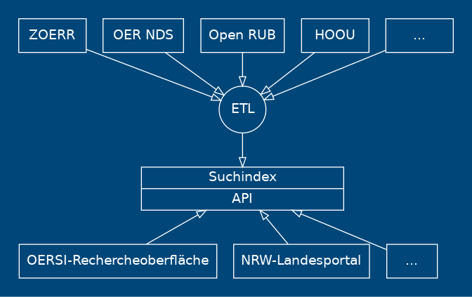

OERSI & SkoHub
– Stand der Dinge
Adrian Pohl
Offene Infrastruktur, Hochschulbibliothekszentrum NRW (hbz)

OER-NRW-Portal-Treffen, 26.08.2020
Diese Präsentation:
http://slides.lobid.org/2020-08-oersi-skohub/

SkoHub
https://skohub.io
Module
SkoHub Editor: mit JSON Schema konfigurierter Metadateneditor plus Browser Extension
SkoHub Vocabs: auf GitHub-/GitLab-Workflows basierende Publikation von kontrollierten Vokabularen für Mensch und Maschine
SkoHub PubSub: Inbox für Deskriptoren ermöglicht themenbasiertes Abonnement/Publikation von Lernressourcen
Nutzung I
Komponenten integrieren sich gegenseitig
OER-Metadatengruppe der DINI AG KIM nutzt SkoHub Vocabs zur Entwicklung/Pflege gemeinsamer kontrollierter Vokabulare & SkoHub Editor für LRMI-Metadatenprofil (s.u.)
Nutzung II: WirLernenOnline
SkoHub Vocabs für kontrollierte Vokabulare und Wordpress Widgets: https://vocabs.openeduhub.de/
SkoHub Editor zum strukturierten Beschreiben von OER eines HOOU-Projekts und Liefern der Metadaten an WirSindOnline (Tweet)
OERSI
https://www.oersi.de
Überblick
Aufgaben
Metadatenstandardisierung
ETL: Extract, Transform, Load
Offene Web-API auf den Index
Rechercheoberfläche
Standardisierung
Prozess zur Entwicklung eines Metadatenprofils steht
Profil wurde innerhalb der OER-Metadatengruppe in mehreren Iterationen entwickelt, zuletzt im Hinblick auf OERSI-Nutzung
Kontrollierte Vokabulare wie in LOM-Profil verabredet: Destatis-Systematik & HCRT
Laufende Diskussion in länderübergreifender Repo AG
ETL-Infrastruktur
Backend ist in der Entwicklung und wurde bereits für erste Quellen in OERSI integriert
Für UI-Entwicklung (und andere Dinge) werden bald zwei neue Stellen besetzt
Ziel: Konfiguration neuer Quellen sollte durch Nicht-Entwickler erfolgen können
Offene Web-API
Zur einfachen Nutzung des Indexes durch uns und Dritte
Technisch: JSON(-LD) via HTTP basierend auf Elasticsearch und Lucene Query Syntax
Intern konzipierte API wird auf Wunsch des hbz geöffnet (teilweise bereits geschehen)
Rechercheoberfläche
Protoyp einer generischen Oberfläche mit ReactiveSearch unter https://www.oersi.de
To Do: Anpassung des Designs zur Integration in NRW-Landesportal